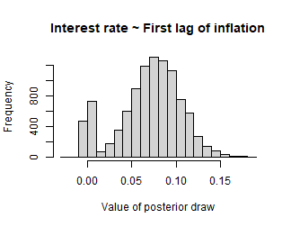

Introduction
A general drawback of vector autoregressive (VAR) models is that the number of estimated coefficients increases disproportionately with the number of lags. Therefore, fewer information per parameter is available for the estimation as the number of lags increases. In the Bayesian VAR literature one approach to mitigate this so-called curse of dimensionality is stochastic search variable selection (SSVS) as proposed by George et al. (2008). The basic idea of SSVS is to assign commonly used prior variances to parameters, which should be included in a model, and prior variances close to zero to irrelevant parameters. By that, relevant parameters are estimated in the usual way and posterior draws of irrelevant variables are close to zero so that they have no significant effect on forecasts and impulse responses. This is achieved by adding a hierarchial prior to the model, where the relevance of a variable is assessed in each step of the sampling algorithm.1
Korobilis (2013) proposes a similar appraoch to variable selection,
which can also be applied to timy varying parameter models. The approach
is implemented in bvartools as function bvs,
which can be easily added to a standard Gibbs sampling algorithm. It is
also implemented in the posterior simulation algorithm of the package an
can be specified analogously to the last section of this introduction,
where the use of the built-in SSVS sampler is described.
This vignette presents code for Bayesian inference of a vector
autoregressive (BVAR) model using stochastic search variable selection.
It uses data set at_macrodata, which contains quarterly
macroeconomic series of Austria. A VAR(4) model is estimated for the
growth rate of real GDP (dy), inflation (Dp)
and the short-term interest rate (r) up to 2019Q4, which
leaves out the quarters in which the pandemic moved output growth by ten
percent. The bvartools package can be used to load the data
and generate the data matrices for the model.
library(bvartools)
# Load and transform data
data("at_macrodata")
at <- at_macrodata[["domestic"]]
at <- ts.intersect(dy = diff(at[, "y"]), Dp = at[, "Dp"], r = at[, "r"])
# Shorten time series
at <- window(at, end = c(2019, 4))
# Generate VAR
data <- create_bvarmodel(at, p = 4, deterministic = "const",
varsel = "ssvs",
iterations = 10000, burnin = 5000)bvartools allows to estimate BVAR models with SSVS
either by using algorithms that were written by the researchers
themselves or by using the built-in posterior simulation algorithm. The
first approach is presented in the following section. The latter
approach is illustrated at the end of this introduction.
Inference based on a user-written algorithm
The prior variances of the parameters are set in accordance with the
semiautomatic approach described in George et al. (2008). Hence, the
prior variance of the
th
parameter is set to
if this parameter should be included in the model and to
if it should be excluded.
is the standard error associated with the unconstrained least squares
estimate of parameter
.
For all variables the prior inclusion probabilities are set to 0.5. The
necessary calculations can be done with function
ssvs_prior. The prior of the error variance-covariance
matrix is uninformative and, in constrast to George et al. (2008), SSVS
is not applied to the covariances.
# Reset random number generator for reproducibility
set.seed(1234567)
# Get data matrices
y <- t(data$data$train$y)
x <- t(data$data$train$x)
tt <- ncol(y) # Number of observations
k <- nrow(y) # Number of endogenous variables
m <- k * nrow(x) # Number of estimated coefficients
# Coefficient priors
a_mu_prior <- matrix(0, m) # Vector of prior means
# SSVS priors (semiautomatic approach)
vs_prior <- ssvs_prior(data, semiautomatic = c(.1, 10))
tau0 <- vs_prior$tau0
tau1 <- vs_prior$tau1
# Prior for inclusion parameter
prob_prior <- matrix(0.5, m)
# Prior for variance-covariance matrix
u_sigma_df_prior <- 0 # Prior degrees of freedom
u_sigma_scale_prior <- diag(0.00001, k) # Prior covariance matrix
u_sigma_df_post <- tt + u_sigma_df_prior # Posterior degrees of freedomThe initial parameter values are set to zero and their corresponding prior variances are set to , which implies that all parameters should be estimated relatively freely in the first step of the Gibbs sampler.
# Initial values
a <- matrix(0, m)
a_v_i_prior <- diag(1 / c(tau1)^2, m) # Inverse of the prior covariance matrix
# Data containers for posterior draws
iterations <- 10000 # Number of saved iterations of the Gibbs sampler
burnin <- 5000 # Number of burn-in draws
draws <- iterations + burnin # Total number of draws
draws_a <- matrix(NA, m, iterations)
draws_lambda <- matrix(NA, m, iterations)
draws_sigma <- matrix(NA, k^2, iterations)SSVS can be added to a standard Gibbs sampler algorithm for VAR
models in a straightforward manner. The ssvs function can
be used to obtain a draw of inclusion parameters and its corresponding
inverted prior variance matrix. It requires the current draw of
parameters, standard errors
and
,
and prior inclusion probabilities as arguments. In this example constant
terms are excluded from SSVS, which is achieved by specifying
include = 1:36. Hence, only parameters 1 to 36 are
considered by the function and the remaining three parameters have prior
variances that correspond to their values in
.
# Start Gibbs sampler
for (draw in 1:draws) {
# Draw variance-covariance matrix
u <- y - matrix(a, k) %*% x # Obtain residuals
# Scale posterior
u_sigma_scale_post <- solve(u_sigma_scale_prior + tcrossprod(u))
# Draw posterior of inverse sigma
u_sigma_i <- matrix(rWishart(1, u_sigma_df_post, u_sigma_scale_post)[,, 1], k)
# Obtain sigma
u_sigma <- solve(u_sigma_i)
# Draw conditional mean parameters
a <- post_normal(y, x, u_sigma_i, a_mu_prior, a_v_i_prior)
# Draw inclusion parameters and update priors
temp <- ssvs(a, tau0, tau1, prob_prior, include = 1:36)
a_v_i_prior <- temp$v_i # Update prior
# Store draws
if (draw > burnin) {
draws_a[, draw - burnin] <- a
draws_lambda[, draw - burnin] <- temp$lambda
draws_sigma[, draw - burnin] <- u_sigma
}
}The output of a Gibbs sampler with SSVS can be further analysed in
the usual way. With the bvartools package the posterior
draws can be collected in a bvarmodel object and the
summary method provides summary statistics. It is also
possible to add information on the inclusion parameters to the
bvarmodel object by providing a named list as an argument.
The list must contain an element coeffs, which contains the
MCMC draws of the coefficients, and element lambda contains
the corresponding draw of the inclusion parameter. Argument
varsel names the algorithm that produced the draws, since
the draws themselves do not reveal it.
bvar_est <- bvar(y = data$data$train$y, x = data$data$train$x,
A = list(coeffs = draws_a[1:36,],
lambda = draws_lambda[1:36,]),
C = list(coeffs = draws_a[37:39, ],
lambda = draws_lambda[37:39,]),
Sigma = draws_sigma,
varsel = "ssvs")
bvar_summary <- summary(bvar_est)
bvar_summary
#>
#> Bayesian VAR model with p = 4
#>
#> Variable selection algorithm: Stochastic search variable selection (George et al., 2008)
#>
#> Endogenous variables: dy, Dp, r
#>
#> Variable: dy
#>
#> Mean SD Naive SD Time-series SD 2.5%
#> dy.l1 -0.010382940 0.039080571 3.908057e-04 9.983890e-04 -0.146635503
#> Dp.l1 -0.002480545 0.072097996 7.209800e-04 1.130829e-03 -0.133075441
#> r.l1 0.021639591 0.103103292 1.031033e-03 1.606362e-03 -0.131008572
#> dy.l2 -0.003670558 0.028231577 2.823158e-04 3.798765e-04 -0.081217025
#> Dp.l2 -0.162479119 0.237695876 2.376959e-03 1.241706e-02 -0.733684307
#> r.l2 0.024351976 0.128257883 1.282579e-03 1.590673e-03 -0.179150286
#> dy.l3 -0.005261692 0.030361579 3.036158e-04 5.521756e-04 -0.098510156
#> Dp.l3 -0.079307202 0.172835633 1.728356e-03 6.571351e-03 -0.591042266
#> r.l3 0.029351289 0.121774411 1.217744e-03 1.404849e-03 -0.175080659
#> dy.l4 0.004613985 0.029180009 2.918001e-04 4.980082e-04 -0.021676420
#> Dp.l4 0.002745923 0.068664030 6.866403e-04 1.150854e-03 -0.088169751
#> r.l4 0.006402587 0.083260412 8.326041e-04 9.889200e-04 -0.129874083
#> const 0.005642191 0.001493286 1.493286e-05 3.823502e-05 0.002905573
#> 50% 97.5% Incl. prob.
#> dy.l1 -0.0018080946 0.017968999 0.1270
#> Dp.l1 -0.0011604722 0.097649786 0.0834
#> r.l1 0.0161153595 0.197642890 0.0418
#> dy.l2 -0.0008369665 0.025819932 0.0973
#> Dp.l2 -0.0261428625 0.041150860 0.3849
#> r.l2 0.0228896435 0.237073845 0.0297
#> dy.l3 -0.0012867590 0.021099450 0.0952
#> Dp.l3 -0.0128792388 0.046406629 0.2325
#> r.l3 0.0289937410 0.227820823 0.0272
#> dy.l4 0.0008465239 0.091432510 0.0974
#> Dp.l4 0.0006907493 0.141554117 0.0798
#> r.l4 0.0063108427 0.144073826 0.0291
#> const 0.0055804669 0.008715984 1.0000 *
#>
#> Variable: Dp
#>
#> Mean SD Naive SD Time-series SD 2.5%
#> dy.l1 0.010317599 0.0233089567 2.330896e-04 8.881621e-04 -0.0060357087
#> Dp.l1 0.307179665 0.0912453082 9.124531e-04 4.029689e-03 0.1210520637
#> r.l1 0.028033380 0.0641198736 6.411987e-04 1.682045e-03 -0.0382228207
#> dy.l2 0.025594112 0.0344396215 3.443962e-04 1.639060e-03 -0.0051394903
#> Dp.l2 0.184738800 0.1205946878 1.205947e-03 8.360990e-03 -0.0091520864
#> r.l2 0.022900344 0.0568686913 5.686869e-04 1.051992e-03 -0.0599708826
#> dy.l3 -0.001828031 0.0114083301 1.140833e-04 2.066538e-04 -0.0383733421
#> Dp.l3 0.083785044 0.1053519002 1.053519e-03 6.510447e-03 -0.0139818891
#> r.l3 0.018244023 0.0452134089 4.521341e-04 6.104724e-04 -0.0606517679
#> dy.l4 -0.009216541 0.0216023097 2.160231e-04 8.025829e-04 -0.0763920982
#> Dp.l4 0.003308467 0.0264095542 2.640955e-04 5.432544e-04 -0.0206218369
#> r.l4 0.010509556 0.0347401611 3.474016e-04 4.971600e-04 -0.0409059600
#> const 0.001572853 0.0006067732 6.067732e-06 1.733006e-05 0.0003504748
#> 50% 97.5% Incl. prob.
#> dy.l1 0.0013369973 0.079318443 0.2323
#> Dp.l1 0.3089691234 0.479050475 0.9890 *
#> r.l1 0.0161396512 0.207629286 0.1066
#> dy.l2 0.0040903810 0.104310789 0.4307
#> Dp.l2 0.2050619994 0.385992275 0.7905
#> r.l2 0.0232239544 0.119104376 0.0521
#> dy.l3 -0.0003047085 0.008785287 0.1075
#> Dp.l3 0.0139235941 0.314253027 0.4669
#> r.l3 0.0185891879 0.098383380 0.0386
#> dy.l4 -0.0014055325 0.005810411 0.2097
#> Dp.l4 0.0009119338 0.074557481 0.0754
#> r.l4 0.0081117169 0.081194634 0.0545
#> const 0.0015781737 0.002754700 1.0000 *
#>
#> Variable: r
#>
#> Mean SD Naive SD Time-series SD 2.5%
#> dy.l1 0.0367449349 0.0105465493 1.054655e-04 5.714027e-04 0.013671660
#> Dp.l1 0.0698198598 0.0353575165 3.535752e-04 2.364499e-03 -0.001461058
#> r.l1 1.0642254325 0.0619079511 6.190795e-04 2.423455e-03 0.953935378
#> dy.l2 0.0014137615 0.0051624909 5.162491e-05 1.861787e-04 -0.002230227
#> Dp.l2 -0.0087570682 0.0210130316 2.101303e-04 9.418476e-04 -0.073944015
#> r.l2 -0.0143039022 0.0551805243 5.518052e-04 2.353877e-03 -0.202600164
#> dy.l3 0.0037120693 0.0079919875 7.991988e-05 3.373222e-04 -0.001905698
#> Dp.l3 -0.0149248342 0.0266669466 2.666695e-04 1.561658e-03 -0.085398409
#> r.l3 0.0040835439 0.0623422573 6.234226e-04 2.432784e-03 -0.134061922
#> dy.l4 0.0026692184 0.0068462952 6.846295e-05 2.787113e-04 -0.001887428
#> Dp.l4 -0.0329379110 0.0347871312 3.478713e-04 2.107736e-03 -0.102968318
#> r.l4 -0.0832672001 0.0683360846 6.833608e-04 3.888502e-03 -0.229284322
#> const -0.0001538565 0.0002152246 2.152246e-06 8.099813e-06 -0.000589653
#> 50% 97.5% Incl. prob.
#> dy.l1 0.0372128506 0.0556770971 0.9808 *
#> Dp.l1 0.0742112273 0.1301580732 0.8845
#> r.l1 1.0665793400 1.1949353846 1.0000 *
#> dy.l2 0.0001928680 0.0190459154 0.1430
#> Dp.l2 -0.0010348754 0.0052493473 0.2143
#> r.l2 -0.0023530216 0.0290875152 0.1347
#> dy.l3 0.0004688028 0.0273353305 0.2529
#> Dp.l3 -0.0018326674 0.0049911259 0.3125
#> r.l3 -0.0004697095 0.1958831705 0.1819
#> dy.l4 0.0003571728 0.0245788787 0.1953
#> Dp.l4 -0.0253847571 0.0038578745 0.5607
#> r.l4 -0.0907438916 0.0076375029 0.6858
#> const -0.0001502655 0.0002586117 1.0000
#>
#> Variance-covariance matrix:
#>
#> Mean SD Naive SD Time-series SD 2.5%
#> dy_dy 8.696091e-05 1.025269e-05 1.025269e-07 1.059087e-07 6.891262e-05
#> dy_Dp 1.887992e-06 2.661264e-06 2.661264e-08 3.402859e-08 -3.279417e-06
#> dy_r 1.581009e-06 8.421181e-07 8.421181e-09 1.159583e-08 -3.095337e-08
#> Dp_Dp 1.137837e-05 1.342237e-06 1.342237e-08 1.565508e-08 9.002294e-06
#> Dp_r 7.961558e-07 3.092371e-07 3.092371e-09 3.798175e-09 2.079270e-07
#> r_r 1.121322e-06 1.368559e-07 1.368559e-09 2.473234e-09 8.836204e-07
#> 50% 97.5%
#> dy_dy 8.641878e-05 1.090026e-04 *
#> dy_Dp 1.863131e-06 7.314373e-06
#> dy_r 1.559406e-06 3.304458e-06
#> Dp_Dp 1.127672e-05 1.435033e-05 *
#> Dp_r 7.825380e-07 1.424338e-06 *
#> r_r 1.110909e-06 1.419766e-06 *The inclusion probabilities of the constant terms are 100 percent, because they were excluded from SSVS.
Using the results from above the researcher could proceed in the usual way and obtain forecasts and impulse responses based on the output of the Gibbs sampler. The advantage of this approach is that it does not only take into account parameter uncertainty, but also model uncertainty. This can be illustrated by the histogram of the posterior draws of the 6th coefficient, which describes the relationship between the first lag of inflation and the current value of the interest rate.
hist(draws_a[6,], main = "Interest rate ~ First lag of inflation", xlab = "Value of posterior draw")
A non-negligible mass of some 12 percent, i.e. 1 - 0.88, of the parameter draws is concentrated around zero. This is the result of SSVS, where posterior draws are close to zero if a coefficient is assessed to be irrelevant during an iteration of the Gibbs sampler and, therefore, is used as its prior variance. On the other hand, about 88 percent of the draws are dispersed around a positive value, where SSVS suggests to include the variable in the model and the larger value is used as prior variance. Model uncertainty is then described by the two peaks and parameter uncertainty by the dispersion of the posterior draws around them.
However, if the researcher prefers not to work with a model, where the relevance of a variable can change from one step of the sampling algorithm to the next, a different approach would be to work only with a highly probable model. This can be done with a further simulation, where very tight priors are used for irrelevant variables and relatively uninformative priors for relevant parameters. In this example, coefficients with a posterior inclusion probability of at least 50 percent are considered to be relevant. The prior variance is set to 0.00001 for irrelevant and to 9 for relevant variables. No additional SSVS step is required. Everything else remains unchanged.
# Get inclusion probabilities
lambda <- bvar_summary$a$lambda
# Select variables that should be included
include_var <- c(lambda >= .5)
# Update prior variances
diag(a_v_i_prior)[!include_var] <- 1 / 0.00001 # Very tight prior close to zero
diag(a_v_i_prior)[include_var] <- 1 / 9 # Relatively uninformative prior
# Data containers for posterior draws
draws_a <- matrix(NA, m, iterations)
draws_sigma <- matrix(NA, k^2, iterations)
# Start Gibbs sampler
for (draw in 1:draws) {
# Draw conditional mean parameters
a <- post_normal(y, x, u_sigma_i, a_mu_prior, a_v_i_prior)
# Draw variance-covariance matrix
u <- y - matrix(a, k) %*% x # Obtain residuals
u_sigma_scale_post <- solve(u_sigma_scale_prior + tcrossprod(u))
u_sigma_i <- matrix(rWishart(1, u_sigma_df_post, u_sigma_scale_post)[,, 1], k)
u_sigma <- solve(u_sigma_i) # Invert Sigma_i to obtain Sigma
# Store draws
if (draw > burnin) {
draws_a[, draw - burnin] <- a
draws_sigma[, draw - burnin] <- u_sigma
}
}Summary statistics of the posterior draws of the restricted model:
bvar_est <- bvar(y = data$data$train$y,
x = data$data$train$x,
A = draws_a[1:36,],
C = draws_a[37:39, ],
Sigma = draws_sigma)
summary(bvar_est)
#>
#> Bayesian VAR model with p = 4
#>
#> Endogenous variables: dy, Dp, r
#>
#> Variable: dy
#>
#> Mean SD Naive SD Time-series SD 2.5%
#> dy.l1 -1.009989e-04 0.0031700436 3.170044e-05 3.170044e-05 -0.006502223
#> Dp.l1 -5.870547e-05 0.0031826964 3.182696e-05 3.182696e-05 -0.006299832
#> r.l1 -6.930529e-05 0.0031190205 3.119021e-05 3.119021e-05 -0.006299245
#> dy.l2 -6.607670e-05 0.0031558775 3.155877e-05 3.155877e-05 -0.006338768
#> Dp.l2 -1.270011e-04 0.0031062651 3.106265e-05 3.106265e-05 -0.006187387
#> r.l2 -2.371115e-06 0.0031683847 3.168385e-05 3.168385e-05 -0.006173500
#> dy.l3 -9.361001e-05 0.0031700477 3.170048e-05 3.170048e-05 -0.006342847
#> Dp.l3 -1.302476e-04 0.0031595746 3.159575e-05 3.159575e-05 -0.006325639
#> r.l3 4.043788e-05 0.0031328850 3.132885e-05 3.132885e-05 -0.006144232
#> dy.l4 4.062519e-05 0.0031701172 3.170117e-05 3.170117e-05 -0.006168723
#> Dp.l4 7.178489e-06 0.0031237599 3.123760e-05 3.123760e-05 -0.006107346
#> r.l4 1.574259e-05 0.0031613209 3.161321e-05 3.137496e-05 -0.006246721
#> const 4.858034e-03 0.0007580259 7.580259e-06 7.580259e-06 0.003397056
#> 50% 97.5%
#> dy.l1 -8.346008e-05 0.006055584
#> Dp.l1 -3.984483e-05 0.006200406
#> r.l1 -4.593079e-05 0.005985789
#> dy.l2 -1.022171e-04 0.006133512
#> Dp.l2 -1.335651e-04 0.005914694
#> r.l2 -1.066779e-05 0.006225661
#> dy.l3 -1.209623e-04 0.006119956
#> Dp.l3 -1.124122e-04 0.006170636
#> r.l3 4.325178e-05 0.006202239
#> dy.l4 2.284646e-05 0.006228360
#> Dp.l4 4.417825e-05 0.006145892
#> r.l4 4.158326e-05 0.006161283
#> const 4.855946e-03 0.006342327 *
#>
#> Variable: Dp
#>
#> Mean SD Naive SD Time-series SD 2.5%
#> dy.l1 0.0003686549 0.0031244039 3.124404e-05 3.124404e-05 -0.0057262654
#> Dp.l1 0.3701423360 0.0768036236 7.680362e-04 7.898549e-04 0.2185440951
#> r.l1 0.0005122644 0.0031484630 3.148463e-05 3.047244e-05 -0.0055597397
#> dy.l2 0.0006109830 0.0031355752 3.135575e-05 3.135575e-05 -0.0055824128
#> Dp.l2 0.3015228353 0.0760091212 7.600912e-04 7.877598e-04 0.1504479657
#> r.l2 0.0005170634 0.0031899687 3.189969e-05 3.189969e-05 -0.0057424410
#> dy.l3 -0.0002423301 0.0031331637 3.133164e-05 3.133164e-05 -0.0063572997
#> Dp.l3 0.0003633662 0.0031497530 3.149753e-05 3.149753e-05 -0.0058035838
#> r.l3 0.0004960386 0.0031686212 3.168621e-05 3.168621e-05 -0.0057789313
#> dy.l4 -0.0005206567 0.0031687757 3.168776e-05 3.168776e-05 -0.0067338512
#> Dp.l4 0.0001234848 0.0031641515 3.164152e-05 3.095492e-05 -0.0061268056
#> r.l4 0.0004902933 0.0031498698 3.149870e-05 3.149870e-05 -0.0056310132
#> const 0.0018653342 0.0005116437 5.116437e-06 5.212473e-06 0.0008483351
#> 50% 97.5%
#> dy.l1 0.0003483333 0.006405639
#> Dp.l1 0.3712270471 0.520167082 *
#> r.l1 0.0005342572 0.006758837
#> dy.l2 0.0006541687 0.006665780
#> Dp.l2 0.3020475268 0.448662479 *
#> r.l2 0.0004973178 0.006724803
#> dy.l3 -0.0002184460 0.005881223
#> Dp.l3 0.0003587139 0.006498735
#> r.l3 0.0005136014 0.006685360
#> dy.l4 -0.0005093920 0.005644658
#> Dp.l4 0.0001720030 0.006256518
#> r.l4 0.0004523707 0.006624322
#> const 0.0018663240 0.002864988 *
#>
#> Variable: r
#>
#> Mean SD Naive SD Time-series SD 2.5%
#> dy.l1 3.728543e-02 0.0087962786 8.796279e-05 8.796279e-05 0.0198667481
#> Dp.l1 8.242009e-02 0.0241856320 2.418563e-04 2.545351e-04 0.0349572419
#> r.l1 1.067651e+00 0.0325931911 3.259319e-04 3.259319e-04 1.0041517656
#> dy.l2 3.968519e-04 0.0030054667 3.005467e-05 3.005467e-05 -0.0055448547
#> Dp.l2 -4.749362e-04 0.0031137807 3.113781e-05 3.186210e-05 -0.0065405375
#> r.l2 -2.323636e-05 0.0031697506 3.169751e-05 3.169751e-05 -0.0062437040
#> dy.l3 1.150050e-03 0.0030133551 3.013355e-05 2.945691e-05 -0.0048257215
#> Dp.l3 -6.574483e-04 0.0031740691 3.174069e-05 3.174069e-05 -0.0068922888
#> r.l3 1.534203e-04 0.0031715053 3.171505e-05 3.110423e-05 -0.0060840189
#> dy.l4 1.005795e-03 0.0029767873 2.976787e-05 2.976787e-05 -0.0048697087
#> Dp.l4 -6.017150e-02 0.0233861522 2.338615e-04 2.338615e-04 -0.1063598704
#> r.l4 -1.032143e-01 0.0311174203 3.111742e-04 3.111742e-04 -0.1646502966
#> const -1.119443e-04 0.0001733741 1.733741e-06 1.733741e-06 -0.0004516849
#> 50% 97.5%
#> dy.l1 3.732982e-02 0.0544316678 *
#> Dp.l1 8.238696e-02 0.1295685101 *
#> r.l1 1.067995e+00 1.1308587629 *
#> dy.l2 3.985418e-04 0.0062115472
#> Dp.l2 -4.475314e-04 0.0056026984
#> r.l2 -1.002894e-05 0.0061931390
#> dy.l3 1.184875e-03 0.0070924978
#> Dp.l3 -6.660539e-04 0.0055352927
#> r.l3 1.614318e-04 0.0063634056
#> dy.l4 1.039508e-03 0.0068378317
#> Dp.l4 -6.019857e-02 -0.0139661603 *
#> r.l4 -1.031433e-01 -0.0420891807 *
#> const -1.107730e-04 0.0002351004
#>
#> Variance-covariance matrix:
#>
#> Mean SD Naive SD Time-series SD 2.5%
#> dy_dy 8.749056e-05 9.981720e-06 9.981720e-08 9.981720e-08 7.006938e-05
#> dy_Dp 2.199075e-06 2.660792e-06 2.660792e-08 2.718221e-08 -3.006187e-06
#> dy_r 1.726666e-06 8.081705e-07 8.081705e-09 8.227310e-09 1.986556e-07
#> Dp_Dp 1.187022e-05 1.392409e-06 1.392409e-08 1.440010e-08 9.441827e-06
#> Dp_r 8.068425e-07 3.099698e-07 3.099698e-09 3.338145e-09 2.351405e-07
#> r_r 1.091573e-06 1.285398e-07 1.285398e-09 1.361919e-09 8.696763e-07
#> 50% 97.5%
#> dy_dy 8.668643e-05 1.090859e-04 *
#> dy_Dp 2.161304e-06 7.505836e-06
#> dy_r 1.699866e-06 3.416634e-06 *
#> Dp_Dp 1.177161e-05 1.490971e-05 *
#> Dp_r 7.975134e-07 1.453068e-06 *
#> r_r 1.080144e-06 1.369359e-06 *Forecasts, impulse responses and variance decompositions can be obtained in the usual manner.
Using the built-in simulation algorithm of
bvartools
Priors can be added to object data using function
add_priors. To use the same specification as above,
argument ssvs is a named list, where element
inprior contains the prior probability that a coefficient
enters a model, element semiautomatic contains the factors
used to obtain
and
based on the semiautomatic approach of George et al. (2008) and
exclude_det = TRUE tells the algorithm to exclude
deterministic terms from the SSVS algorithm.
# Obtain priors
model_with_priors <- add_priors(data,
coef = list(v_i = 0),
sigma = list(df = 1, scale = 0.00001),
varsel = list(inprior = 0.5, semiautomatic = c(0.01, 10), exclude_det = TRUE))Initial values can be added to the model by using function
add_initial_values.
model_with_priors <- add_initial_values(model_with_priors)Posterior draws can be obtained using function
add_posterior_coefficients. It will recognise the
specifications of the model based on the content of object
model_with_priors and produce the respective draws from the
posterior.
ssvs_est <- add_posterior_coefficients(model_with_priors)The output of add_posterior_coefficients is an object of
class bvarmodel. Thus, further analytical steps can be done
as described above.
Citing bvartools
If you use bvartools in published work, please cite it.
citation("bvartools") prints the reference, and the package
has the DOI 10.5281/zenodo.22736604,
which always resolves to the latest archived version.
References
Chan, J., Koop, G., Poirier, D. J., & Tobias, J. L. (2019). Bayesian Econometric Methods (2nd ed.). Cambridge: University Press.
George, E. I., Sun, D., & Ni, S. (2008). Bayesian stochastic search for VAR model restrictions. Journal of Econometrics, 142(1), 553-580. https://doi.org/10.1016/j.jeconom.2007.08.017
Koop, G., & Korobilis, D. (2010). Bayesian multivariate time series methods for empirical macroeconomics. Foundations and trends in econometrics, 3(4), 267-358. https://dx.doi.org/10.1561/0800000013
Korobilis, D. (2013). VAR forecasting using Bayesian variable selection. Journal of Applied Econometrics, 28(2), 204-230. https://doi.org/10.1002/jae.1271